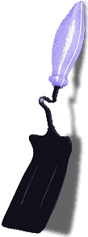
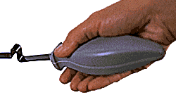
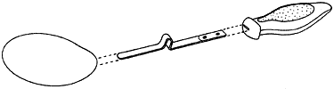

|
You're making spaghetti. You stir the sauce, then set the spoon on the counter, adding to the saucy mess left from the previous stirrings.
 My goal was to solve this problem. At first, I considered ways of minimizing the mess or simplifiying clean-up with various racks or dishes. Finally, I realized that a much better solution was to simply leave the utensils in the pot during cooking. In order to accomplish this, the utensils would need the abilities to withstand high heat and rest in the pot with the lid still sealed. My goal was to solve this problem. At first, I considered ways of minimizing the mess or simplifiying clean-up with various racks or dishes. Finally, I realized that a much better solution was to simply leave the utensils in the pot during cooking. In order to accomplish this, the utensils would need the abilities to withstand high heat and rest in the pot with the lid still sealed. |
 |
How it Works
 The utensil is weighted to rest tip-down, like conventional utensils, in an uncovered pot.
The utensil is weighted to rest tip-down, like conventional utensils, in an uncovered pot.
Unique bends in the stem of the utensil allow the lid to seal the pot while the utensil remains inside, thus preventing heat loss from a propped-up lid. If you would like the lid propped up, you can always turn the utensil on its side or upside down to allow steam to escape.
The unique bends in the utensils' stems differ for the spoon and flipper. The angles in the flipper's bend accommodate the structure of a saucepan — the pan in which a flipper would typically be used. The spoon's angles accommodate taller pots and pans in which stirring is usually necessary.
The Ergonomic Handle

These utensils make cooking easier for those with arthritic or weakened hands. The thick middle of the handle allows grasping without requiring the hand to be in a closed position — a position that many arthritic hands are incapable of. The bottom of the handle is fairly flat to resist twisting out from a weak grip, which can easily occur with a heavy piece of food.
Manufacturing

As stated earlier, the utensils must withstand large amounts of heat, which is why I decided to construct the stem and head out of mild-carbon steel, which can be easily cut and stamped (relative to stainless steel). The stem is resistance-welded to the head, then electroplated with black chromium. The black chrome gives an attractive finish while still possessing toughness, heat resistance, and stain resistance.
The polysulfone thermoplastic handle is injection-molded around the stem with a .003" deep texture pattern molded into the upper and lower surfaces. But best of all, these utensils can be produced at a cost comparable to other high-quality utensils.

|